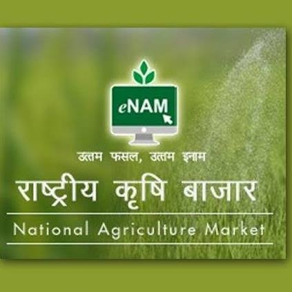

Tamil Nadu Agricultural Schemes

1. Pradhan Mantri Krishi Sinchai Yojana (PMKSY)
Description: Aims to enhance access to irrigation and water conservation.
Application Platform: Apply Here

2. National Agriculture Market (eNAM)
Description: Provides an online trading platform for agricultural commodities.
Application Platform: Apply Here
3. Pradhan Mantri Fasal Bima Yojana (PMFBY)
Description: Crop insurance scheme to provide financial support to farmers in case of crop failure.
Application Platform: Apply Here
4. Pradhan Mantri KISAN Samman Nidhi (PM-KISAN)
Description: Under the scheme, an income support of ₹6,000 per year in three equal installments will be provided to all landholding farmer families.
Application Platform: Apply Here
Upcoming Schemes

Mannuyir Kaathu Mannuyir Kappom
Description: Chief Minister’s Mannuyir Kaathu Mannuyir Kappom Scheme to preserve soil fertility by distributing green manure seeds to farmers.
Application Platform: Will be launched soon...